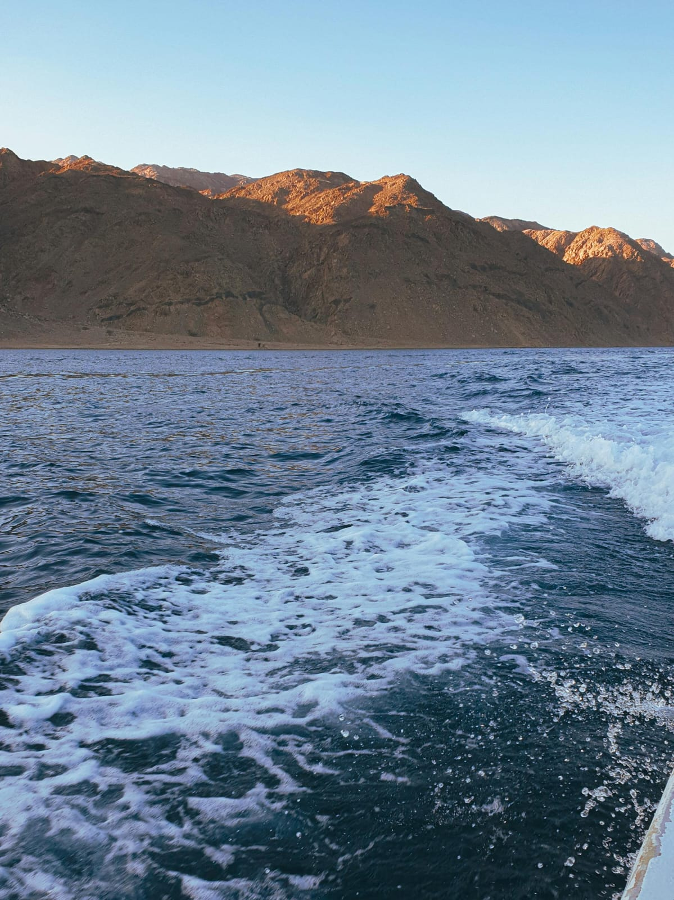
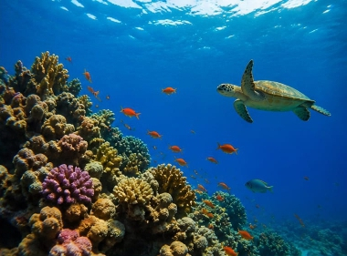
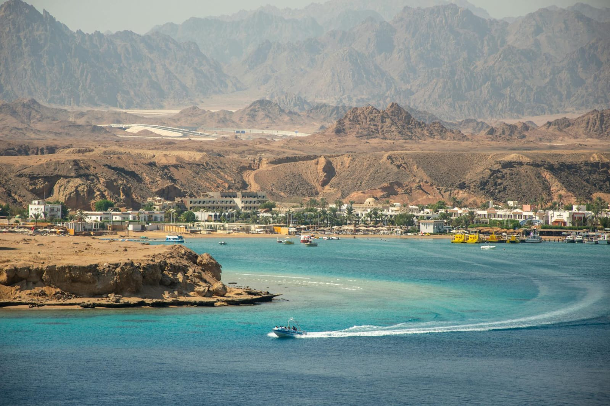

جبال البحر الأحمر تُعد من أبرز المعالم الطبيعية في مصر، حيث تمتد على طول الساحل الغربي للبحر الأحمر، وتشكل خلفية مميزة للشواطئ الساحلية. تتميز هذه الجبال بتكويناتها الصخرية القديمة، وتنوع ألوانها بين البني والأحمر والرمادي، مما يمنحها مظهرًا فريدًا خاصة وقت شروق وغروب الشمس. تُعتبر هذه الجبال من أقدم التكوينات الجيولوجية في المنطقة، وتحتوي على ثروات طبيعية ومعادن مختلفة. كما أنها موطن للعديد من الكائنات الصحراوية مثل الغزلان والوعول، إضافة إلى بعض النباتات التي تتحمل الظروف القاسية. وتجذب جبال البحر الأحمر محبي المغامرة والرحلات، حيث يمكن ممارسة أنشطة مثل التسلق، والتخييم، والسفاري، واستكشاف الوديان والمسارات الجبلية. كما تمنح الزائر فرصة للاستمتاع بالهدوء والطبيعة البكر بعيدًا عن صخب المدن. تجمع جبال البحر الأحمر بين الجمال الطبيعي والتاريخ الجيولوجي، مما يجعلها وجهة مميزة لكل من يبحث عن تجربة مختلفة تجمع بين الاستكشاف والاسترخاء.

تُعد محمية رأس محمد واحدة من أشهر وأجمل المحميات الطبيعية في مصر، وتقع عند التقاء خليج السويس بخليج العقبة في جنوب شبه جزيرة سيناء، بالقرب من مدينة شرم الشيخ. تتميز المحمية بتنوع بيئي فريد، حيث تضم شعابًا مرجانية من الأجمل في العالم، وتعيش بها مئات الأنواع من الأسماك والكائنات البحرية الملونة، مما يجعلها وجهة مثالية لعشاق الغوص والسنوركلينج. كما تتميز بمياهها الصافية التي تكشف تفاصيل الحياة البحرية بشكل مذهل. لا تقتصر روعة المحمية على البحر فقط، بل تضم أيضًا بيئات صحراوية وجبالًا وتكوينات صخرية مميزة، بالإضافة إلى أماكن مثل بحيرة “المياه المسحورة” التي تشتهر بملوحتها العالية، وأشجار المانجروف التي تنمو في المياه المالحة. تُعد محمية رأس محمد مكانًا مثاليًا لمحبي الطبيعة والاستكشاف، حيث يمكن الاستمتاع بالمناظر الخلابة، ومراقبة الطيور المهاجرة، والتقاط الصور في بيئة طبيعية نادرة تجمع بين جمال البحر وسحر الصحراء.

يُعد جبل موسى من أشهر المعالم الدينية والسياحية في مصر، ويقع في جنوب شبه جزيرة سيناء بالقرب من دير سانت كاترين. يرتبط الجبل بقصة دينية عظيمة، حيث يُعتقد أنه المكان الذي كلّم الله فيه النبي موسى وتلقى الوصايا العشر، لذلك يُعتبر موقعًا مقدسًا لدى الديانات السماوية. يبلغ ارتفاع الجبل حوالي 2285 مترًا فوق سطح البحر، ويقصده الزوار من مختلف أنحاء العالم لصعوده، خاصة في رحلة ليلية تنتهي بمشاهدة شروق الشمس من القمة، وهو مشهد مميز يجذب الكثير من السائحين. يمكن الصعود عبر طريقين: طريق الدرج (درجات التوبة) وهو أكثر صعوبة، أو الطريق الممهد الذي يُستخدم أيضًا بالجمال. يحيط بالجبل طبيعة جبلية خلابة، وتُعد الرحلة إليه تجربة تجمع بين المغامرة والروحانية، حيث يستمتع الزائر بالهدوء والسكينة وسط المناظر الطبيعية الفريدة.
شواطئ البحر الأحمر من أجمل الوجهات السياحية في مصر، حيث المياه الصافية ذات اللون الفيروزي والرمال الناعمة التي تمنح إحساسًا بالراحة والهدوء. تتميز هذه الشواطئ بوجود شعاب مرجانية رائعة تجعلها مكانًا مثاليًا لمحبي الغوص والسنوركلينج، حيث يمكن مشاهدة أنواع مختلفة من الأسماك الملونة والكائنات البحرية النادرة. تمتد سواحل البحر الأحمر عبر مدن سياحية شهيرة مثل الغردقة وشرم الشيخ ومرسى علم، وكل مدينة لها طابعها الخاص، لكنها جميعًا تشترك في جمال الطبيعة ونقاء الجو. توفر هذه المناطق العديد من الأنشطة الترفيهية مثل ركوب القوارب، والرحلات البحرية، والرياضات المائية، بالإضافة إلى أماكن مميزة للاسترخاء والاستمتاع بالشمس. سواء كنت تبحث عن المغامرة أو الهدوء، فإن شواطئ البحر الأحمر تقدم تجربة متكاملة تجمع بين الجمال الطبيعي والترفيه، مما يجعلها وجهة مثالية لقضاء عطلة لا تُنسى.
